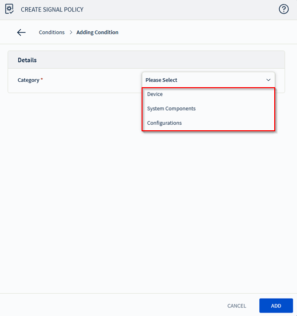

Signal Policy Conditions | Category Details
About This Reference
This reference topic provides option details for the second step in the five-step process of configuring a Signal policy, where you define the conditions that trigger the policy. For procedural instructions, see Signal Policy Wizard | Build Policy Conditions.
Condition Categories
The following table describes how categories, sub-categories, and individual condition fields work together.
| Category | Sub-category / Device Family |
|---|---|
| Devices | Filters conditions to properties and events related to devices
enrolled in SOTI MobiControl belonging to the
following platforms:
Important: Only one device family
can be specified when created mixed policies.
Note: Supported managed devices can evaluate Device
properties at a defined frequency. This allows Signal policies
to respond without waiting for device check-ins with the server.
For more information, see Signal Policy Wizard | Configure Policy Settings.
|
| System Components | Filters conditions to the following system-level components.
See Signal Policy | System Components: Properties and Events for a complete list of properties and events available for this category. |
| Configurations | Filters conditions to the following configuration objects
created through the console.
|